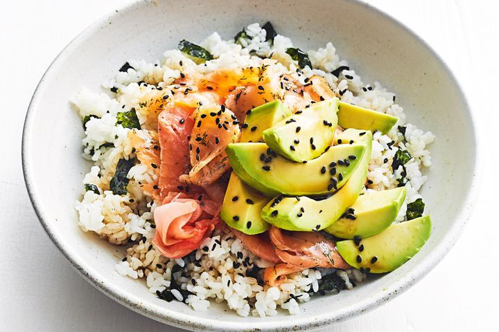

TikTok Salmon Rice Bowl

Description
Tik Tok famous dish
Ingredients
- 3 to 4 oz. cooked salmon, chilled
- Leftover rice
- 1 tbsp water
- 1 tbsp soy sauce
- Mayonnaise
- 2 tsp Sriracha
- Sliced avocado
- Toasted sesame seeds, for garnish
- Seaweed
Steps
- In a microwave safe bowl, add the salmon. Using a fork, flake it until it resembles canned fish. Top the salmon with rice, and sprinkle rice with about 1 tablespoon of water.
- Cover bowl with parchment or plastic wrap, and microwave until the rice is fluffy and everything is warmed through, about 2 minutes.
- Remove bowl from the microwave, and discard the parchment/plastic wrap. Add soy sauce, mayonnaise and sriracha. Toss until fully combined.
- Top bowl with avocado, kimchi, scallions, and sesame seeds. Serve with seaweed snacks.